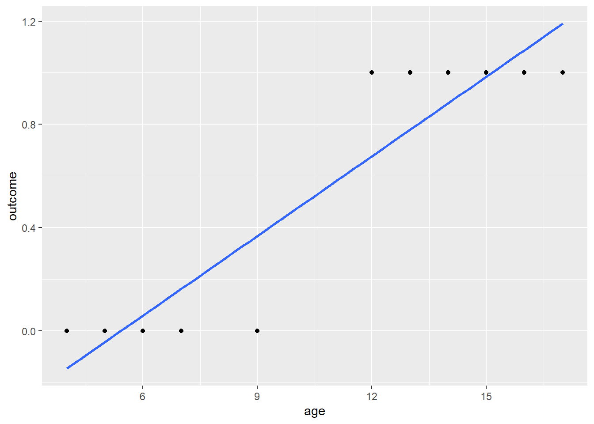
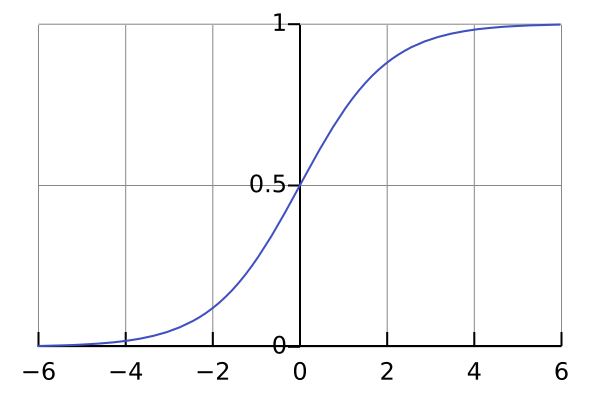
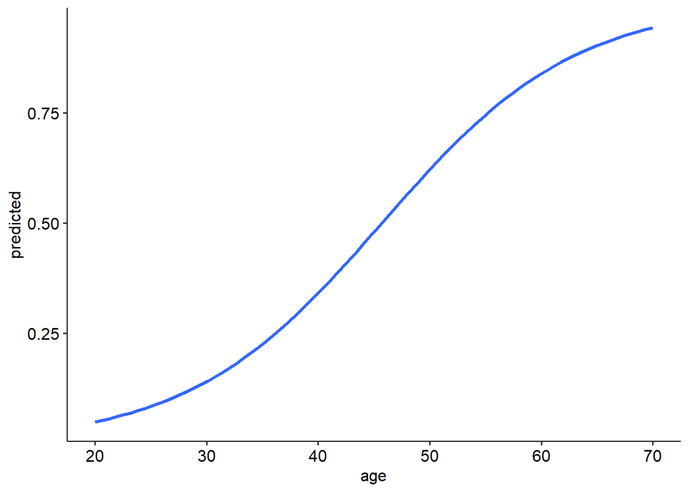

| Burnout | No burnout | Total | |
|---|---|---|---|
| Musician | 20 | 4 | 24 |
| Non-musician | 10 | 8 | 18 |
| Total | 30 | 12 | 42 |
10 Logistic regression
This section of the book (at least for the time being) deals with logistic regression. In some ways, we have come full circle with the inclusion of this chapter: the first statistical test we looked at were to do with categorical data, and now we make a partial return to categorical data.
While I recognise that logistic regression has an awesome application to classification and basic machine learning, the focus of this book is not on classification but prediction. Thus, we won’t be diving into classification accuracy or ROC curves in the context of logistic regression, even though these are not terribly hard to implement in either R or Jamovi.
10.1 Probability and odds
10.1.1 Reminder of probabilities
Consider the following table:
You may recall that this is a 2x2 contingency table, which we have seen before in a chi-square context. Using this table, we can work out the probability of certain events or outcomes.
If we selected someone randomly from this table, for example, what is the probability that they would be a musician? Well, we can see that there are 24 musicians from the sample of 42, so we could simply say:
\[ P(Musician) = \frac{24}{42} = 0.57 \]
Likewise, what is the probability that someone is burnt out? That would simply be:
\[ P(Burnout) = \frac{30}{42} = 0.71 \]
What about the probability that someone is a musician and and burnt out? We could denote this as follows:
\[ P(Musician ∩ Burnout) = \frac{20}{42} = 0.47 \] What about the probability that someone is burnt out, given they are a musician? This would be a conditional probability, where we are finding a probability of something on the condition that the person is burnt out. There are 24 participants who reported burnout, so our calculation would be as follows:
\[ P(Burnout | Musician) = \frac{20}{24} = 0.83 \]
10.1.2 Odds
Now, let’s talk about odds. Odds are simply the likelihood of a particular outcome occuring, and is calculated as the probability that an event will occur, divided by the probability that the event will not occur. In other words, if the probability of an event is denoted as \(A\), the probability of event \(A\) not occuring is \(1-A\). We can then calculate the odds as:
\[ Odds = \frac{A}{1-A} \]
Let’s return to our example above, and print out the table again for ease of reference.
| Burnout | No burnout | Total | |
|---|---|---|---|
| Musician | 20 | 4 | 24 |
| Non-musician | 10 | 8 | 18 |
| Total | 30 | 12 | 42 |
What are the odds of burnout in the musician group? To do this, we need to find the probability of burnout given they are musicians, and divide that by the probability of no burnout given they are musicians. The odds of burnout given that someone is a musician is as we saw above:
\[ P(Burnout | Musician) = \frac{20}{24} \]
And the probability of someone not burning out given that they are a musician must therefore be:
\[ P(No \ burnout | Musician) = \frac{4}{24} \] Now we can divide these two probabilities as follows:
\[ Odds = \frac{20/24}{4/24} = \frac{20}{4} = 5 \]
What this means is that musicians are 5 times as more likely to experience burnout than not experience it.
One more example. What are the odds of burnout in the non-musician group? Using the same principles as above, we can calculate this as follows.
\[ P(Burnout | Nonmusician) = \frac{10}{18} \] \[ P(No \ burnout | Nonmusician) = \frac{8}{18} \]
\[ Odds = \frac{10/18}{8/18} = \frac{10}{8} = 1.25 \]
So even non-musicians are 1.25 times more likely - or, in other words, 25% more likely - to increase burnout than not experience it.
10.1.3 Odds ratios
Now we can take a look at the odds ratio. The odds ratio describes how likely one outcome is given an exposure/group, compared to another exposure/group. The odds ratio is calculated by dividing the odds of event A by the odds of event B. The resulting value gives an indication of how much more likely event A is compared to event B, given differences in exposure.
We have already calculated two sets of odds ratios:
- The odds that a musician experiences burnout; \(Odds = 5\)
- The odds that a non-musician experiences burnout; \(Odds = 1.25\)
We can now calculate an odds ratio for how likely a musician is to experience burnout compared to a non-musician. We simply divide the two sets of odds:
\[ OR = \frac{Odds(A)}{Odds(B)} \]
\[ OR = \frac{5}{1.25} = 4 \]
An odds ratio of 4 indicates that a musician is 4 times as likely to experience burnout compared to a non-musician. Heavens!
10.2 Theory of logistic regression
10.2.1 Introduction
All of the concepts on the previous page bring us to the main technique of this model, which is logistic regression. Logistic regression is used when we want to predict a binary outcome - for example, dead/alive status, affected/unaffected status and other scenarios where we have two primary outcomes. In this sense, we are essentially making a prediction about how likely outcome 1 is over outcome 0. Keep this in mind!
10.2.2 Modelling probabilities (sort of)
Consider the following example data. We can see that we have two columns of interest: age and outcome. Notice how outcome only takes the values of 0 and 1. This is because this is a binary variable, where 0 = one outcome and 1 = another outcome. Often, we run into situations where we are interested in predicting a binary outcome using a series of predictors, including continuous ones.
age_data id age outcome
1 1 4 0
2 2 5 0
3 3 6 0
4 4 7 0
5 5 9 0
6 6 12 1
7 7 13 1
8 8 14 1
9 9 15 1
10 10 16 1
11 11 17 1Your first thought may be to just use a simple linear regression in this instance, and sure, R isn’t going to stop you from doing so:
summary(
lm(outcome ~ age, data = age_data)
)
Call:
lm(formula = outcome ~ age, data = age_data)
Residuals:
Min 1Q Median 3Q Max
-0.36788 -0.12490 0.01528 0.13212 0.32370
Coefficients:
Estimate Std. Error t value Pr(>|t|)
(Intercept) -0.55739 0.16515 -3.375 0.00819 **
age 0.10281 0.01421 7.235 4.89e-05 ***
---
Signif. codes: 0 '***' 0.001 '**' 0.01 '*' 0.05 '.' 0.1 ' ' 1
Residual standard error: 0.2108 on 9 degrees of freedom
Multiple R-squared: 0.8533, Adjusted R-squared: 0.837
F-statistic: 52.35 on 1 and 9 DF, p-value: 4.893e-05You might conclude that you have a significant model, with age being a significant predictor of the binary outcome. Nice! … right? Well, the moment you plot your data you may quickly see the problem with this approach:
age_data %>%
ggplot(
aes(x = age, y = outcome)
) +
geom_point() +
geom_smooth(method = "lm", se = FALSE)`geom_smooth()` using formula = 'y ~ x'
There are two huge problems here! For starters, the line currently implies that there are values that exist between 0 and 1, but what is that meant to mean? In this instance, how can we have any intermediate values between our binary outcome? The second problem is that a simple linear regression also implies that there are values that exist beyond 0 and 1, as you can hopefully see in the graph above. This also makes no sense!
10.2.3 The logistic model
In short, if we want to use our standard regression techniques, we need to model our data in a way where we can have outcomes beyond 0 or 1. Given that probabilities don’t let us do this, that’s a no-go (unless we use probit regression, but that’s a different kettle of fish). Maybe we could use the odds because they let us go past 1 - but as we saw previously, odds are bounded at a minimum of 0. However… log odds are not bounded in this way, as the log of 0 is \(- \infty\). It also turns out that with a large enough sample size, the relationship between a predictor and the log odds is linear. Therefore, we can model a regression against the log odds as follows:
\[ log(Odds) = \beta_0 + \beta_1 x_1 + \epsilon_i \] This is essentially the equation for logistic regression. We use the linear regression formula to predict the log odds of an outcome. This makes logistic regression a form of the generalised linear model (GLM). We won’t go too into GLMs beyond here, but essentially the GLM uses a linear equation to model an outcome Y using a link function. The link function describes how the predictors relate to the outcome in the model, or in other words it allows us to use a linear regression on a transformed outcome:
\[ f(Y) = \beta_0 + \beta_1 x_1 + \epsilon_i \]
In the formula above, \(f(Y)\) is used to describe the link function. In our instance, we are looking at a logit link to do a logistic regression, where our outcome is log odds (as opposed to Y, the dependent variable directly). There are many others out there that are suited for different types of data (e.g. Poisson regression). As another example of a link function, the identity function is \(f(Y) = Y\); this gives us linear regression, so really our usual regression models are just an example of the GLM.
The logistic function is characterised by a very obvious S-shaped curve:

(Technical note: the regression line that is fit is no longer least squares regression. Rather, it uses a procedure called maximum likelihood. Think of it as a different engine under the hood.)
In practice, then, this means that we can use the same kinds of thinking as we have in previous regression models to interpret logistic regression outcomes. Namely, given the formula above, a 1-unit increase in \(x_1\) will correspond to a \(\beta_1\) increase in the log odds. However, even though mathematically that makes sense, it’s hard to interpret what this actually means. What does an increase in log odds correspond to??
To solve this dilemma, we often will want to convert our outcome back into odds. To do so is simple: we simply exponentiate both sides:
\[ Odds = e^{\beta_0 + \beta_1 x_1 + \epsilon_i} \] To obtain the probability of an event occuring, we need to convert the odds back into a probability:
\[ P(Y = 1) = \frac{1}{1 + e^{-(\beta_0 + \beta_1 x_1 + \epsilon_i)}} \]
10.3 Example
Below is a dataset relating to the presence of sleep disorders (credit to Laksika Tharmalingam on Kaggle for this dataset!), and various metrics relating to lifestyle and physical health. The dataset contains the following variables:
- id: Participant id
- gender: Participant gender
- age: Participant age
- sleep_duration: The number of hours the participant sleeps per day
- sleep_quality: The participant’s subjective rating (1-10) of the quality of their sleep
- physical_activity: How many minutes per day the participant does physical activity
- stress: Subjective rating of stress level (1-10)
- bmi: BMI category (Underweight, normal, overweight)
- blood_pressure: systolic/diastolic blood pressure
- heart_rate: Resting heart rate of the participant, in bpm
- sleep_disorder: Whether the participant has a sleep disorder or not (0 = No, 1 = Yes)
sleep <- read_csv(here("data", "logistic", "sleep_data.csv"))Rows: 374 Columns: 11
── Column specification ────────────────────────────────────────────────────────
Delimiter: ","
chr (3): gender, bmi, blood_pressure
dbl (8): id, age, sleep_duration, sleep_quality, physical_activity, stress, ...
ℹ Use `spec()` to retrieve the full column specification for this data.
ℹ Specify the column types or set `show_col_types = FALSE` to quiet this message.In this example, we’re interested in seeing whether specific factors predict whether or not the participant has a sleep disorder. We’ll work with an example with one predictor to start, and then move to multiple predictors afterwards.
10.3.1 Assumptions
The refreshing thing about the logistic regression is that there are actually very few assumptions that need to be made. For starters, we do not assume the following:
- Linearity between the IV and the DV
- Normality
- Homoscedasticity
None of these assumptions apply! What we do assume instead is:
- Linearity between the IV and the logit (i.e. the log odds)
- The outcome is a binary variable that is mutually exclusive (someone cannot be Y = 0 and Y = 1 at the same time)
- Absence of multicollinearity (in a multiple regression context)
10.3.2 Building the model
Here is where things start to change a little from what we’re used to. Because we are not building a linear model but a generalised linear model, we now need to use the glm() function in R. glm(), by and large, works exactly the same way as you have seen with lm(); you need to give it arguments in the form of outcome ~ predictor, and once you have run the function you need to call the results using summary(). The first thing that changes is that by virtue of the fact that we are using the GLM, we must specify what link function we are working with. This can be set using the family argument.
In the instance of logistic regression, the relevant family is binomial, and specifically binomial(link = "logit"):
model <- glm(outcome ~ predictor, data = data, family = binomial(link = "logit"))The formula is a little strange, but binomial() is essentially a function that takes the argument link, for which we set the value as "logit". The logit argument is the default for this function though, so we can simply shorten this down to family = binomial specifically for logistic regressions. (For other binomial-based GLMs, you must specify the link.)
With that in mind, we can build our logistic regression models. In the first instance, let’s see if age predicts whether someone has a sleep disorder.
sleep_glm <- glm(sleep_disorder ~ age, data = sleep, family = binomial)
summary(sleep_glm)
Call:
glm(formula = sleep_disorder ~ age, family = binomial, data = sleep)
Coefficients:
Estimate Std. Error z value Pr(>|z|)
(Intercept) -5.28024 0.65343 -8.081 6.44e-16 ***
age 0.11549 0.01493 7.738 1.01e-14 ***
---
Signif. codes: 0 '***' 0.001 '**' 0.01 '*' 0.05 '.' 0.1 ' ' 1
(Dispersion parameter for binomial family taken to be 1)
Null deviance: 507.47 on 373 degrees of freedom
Residual deviance: 433.36 on 372 degrees of freedom
AIC: 437.36
Number of Fisher Scoring iterations: 4Note that our output table is a little bit different than what we’re used to; this is because of the change in procedure mentioned on the previous page (from least squares to maximum likelihood). However, we can still largely read this output the same way as we have. We can see that age is a significant predictor (p < .001).
The coefficient for age is .115. We can get the coefficients seperately by using the coef() function on our model:
coef(sleep_glm)(Intercept) age
-5.2802414 0.1154897 What does this mean? It means that for every 1 unit increase in age, the log odds increase by .115. This is important because remember that we’re modelling against log odds, not odds or probability! In essence, we have estimated the following:
\[ log(Odds) = -5.280 + (0.115 \times x_1) \]
We need to make sense of this another way somehow. Recall that log odds and odds relate to each other in the following way:
\[ Odds = e^{\beta_0 + \beta_1 x_1 + \epsilon_i} \]
To obtain the odds, as discussed on the previous page, we need to exponentiate our coefficients:
exp(coef(sleep_glm))(Intercept) age
0.005091201 1.122423009 The exponentiated coefficient gives us our odds ratio. This describes the multiplied change in odds for every 1 unit increase of our predictor. In this instance, for every 1 year increase in age, the predicted odds of having a sleep disorder are multiplied by 1.12. Another way to describe this is that the predicted odds of having a sleep disorder increase by a factor of 1.12.
This coefficient does not mean the following:
- The odds increase by 1.12 for every unit of x - remember, only the log odds are linearly related to the predictor. The odds are non-linearly related.
- The probability increases by 1.12 - same deal as above, the probability isn’t linearly related to the predictors.
We can get confidence intervals around our estimated coefficients using confint(), just like we have previously. We can do this either on the original coefficients, or the exponentiated ones. The confidence interval around the exponentiated coefficients gives us a 95% CI for our odds ratio.This is probably more useful in terms of interpretation than the log odds coefficients, so we have chosen them here.
confint(sleep_glm)Waiting for profiling to be done... 2.5 % 97.5 %
(Intercept) -6.60646431 -4.0395789
age 0.08712071 0.1457569exp(confint(sleep_glm))Waiting for profiling to be done... 2.5 % 97.5 %
(Intercept) 0.001351603 0.01760488
age 1.091028365 1.15691494Thus, we can say that the OR of a sleep disorder is 1.12 (95% CI = [1.09, 1.16]).
10.3.3 Predictions
Now recall that we can convert from odds to probabilities in the following manner:
\[ P(Y = 1) = \frac{1}{1 + e^{-(\beta_0 + \beta_1 x_1 + \epsilon_i)}} \]
Using this, we can make predictions about the probability of our outcome for a given value of our predictor. For example, what is the probability that a 50 year old will have a sleep disorder? That would be given as the following:
\[ P(Y = 1) = \frac{1}{1 + e^{-(\beta_0 + \beta_1 x_1 + \epsilon_i)}} \]
\[ P(Y = 1) = \frac{1}{1 + e^{-(-5.280 + (0.115 \times 50)}} \]
\[ P(Y = 1) = \frac{1}{1 + e^{-0.47}} \]
We can use R to do the calculation for us:
1/(1 + exp(-0.47))[1] 0.6153838Thus, a 50 year old person has a 61.5% chance of having a sleep disorder (note that this has been rounded).
We can actually plot the expected probabilities across a range of values for age by first asking R to predict the probabilities across a range of ages. This will draw the characteristic S-shaped curve of the logistic model. We use the predict() function to calculate the predicted probabilities of each value of our predictor. The type = response argument is used here to tell R to predict the probabilities (and not the log odds).
`geom_smooth()` using formula = 'y ~ x'Warning in eval(family$initialize): non-integer #successes in a binomial glm!
10.3.4 Logistic regression with multiple predictors
Let’s now expand out the previous example to include two predictors: age and stress. Just like a regular multiple regression, logistic regression can include multiple continuous predictors. This will take on the form of the following:
\[ log(Odds) = \beta_0 + \beta_1 x_1 + \beta_2 x_2 ... \beta_n x_n + \epsilon_i \]
This means that our odds formula becomes:
\[ Odds = e^{\beta_0 + \beta_1 x_1 + \beta_2 x_2 ... \beta_n x_n + \epsilon_i} \] And so on so forth with our probability formula. Really, this is just an extension of what we have already seen in multiple regression, but applied to a logistic regression context. Let’s see what this looks like in R with the below code:
sleep_glm2 <- glm(sleep_disorder ~ age + stress, data = sleep, family = binomial)
summary(sleep_glm2)
Call:
glm(formula = sleep_disorder ~ age + stress, family = binomial,
data = sleep)
Coefficients:
Estimate Std. Error z value Pr(>|z|)
(Intercept) -13.26171 1.41932 -9.344 < 2e-16 ***
age 0.20510 0.02212 9.272 < 2e-16 ***
stress 0.77585 0.10607 7.315 2.58e-13 ***
---
Signif. codes: 0 '***' 0.001 '**' 0.01 '*' 0.05 '.' 0.1 ' ' 1
(Dispersion parameter for binomial family taken to be 1)
Null deviance: 507.47 on 373 degrees of freedom
Residual deviance: 355.62 on 371 degrees of freedom
AIC: 361.62
Number of Fisher Scoring iterations: 5What do we see here? Well, we can see that age is a significant predictor of the presence of a sleep disorder (p < .001), and stress is as well (p < .001). Namely, for every year increase in age, the log odds of a sleep disorder increase by 0.205, holding stress constant. Likewise, for every 1 point increase in stress, the log odds increase by .776, holding age constant.
To convert this into odds ratios, we exponentiate the coefficients:
exp(coef(sleep_glm2)) (Intercept) age stress
1.739856e-06 1.227649e+00 2.172449e+00 And let’s generate confidence intervals for our odds ratios too:
exp(confint(sleep_glm2))Waiting for profiling to be done... 2.5 % 97.5 %
(Intercept) 9.083049e-08 0.0000240461
age 1.178095e+00 1.2851325926
stress 1.782252e+00 2.7038110976We can see that the for every 1 year increase in age, the predicted odds of having a sleep disorder increase by a factor (i.e. are multiplied by) of 1.23 (95% CI: [1.18, 1.29]), holding stress constant. For every 1 unit increase in stress, the predicted odds of a sleep disorder increase by a factor of 2.17 (95% CI: [1.78, 2.70]), holding age constant.
Just like before, we can also predict the probability that a participant will have a sleep disorder given their age and stress level. For example, let’s say we have a 50 year old with a stress level of 5:
\[ P(Y = 1) = \frac{1}{1 + e^{-(-13.262 + (0.205 \times 50) + (0.776 \times 5))}} \]
\[ P(Y = 1) = \frac{1}{1 + e^{-0.868}} = 0.704 \]
THus, this individual has a 70.4% chance of having a sleep disorder. Now what about if the person’s stress level is 6?
\[ P(Y = 1) = \frac{1}{1 + e^{-(-13.262 + (0.205 \times 50) + (0.776 \times 6))}} \]
\[ P(Y = 1) = \frac{1}{1 + e^{-1.644}} = 0.838 \] Now the person’s probability is 83.8%. In other words, it helps not to be stressed!
10.4 Pseudo \(R^2\)
10.4.1 Regular \(R^2\)
Recall that in a linear regression, we often talk about \(R^2\), or the coefficient of determination. We interpret this value as the amount of variance that is explained in our outcome by our predictor in the regression (or all of our predictors, in the case of multiple regression).
As a reminder, here is the output for the regression on flow proneness in the regression module:
w10_flow_lm <- lm(DFS_Total ~ trait_anxiety + openness, data = w10_flow)
summary(w10_flow_lm)
Call:
lm(formula = DFS_Total ~ trait_anxiety + openness, data = w10_flow)
Residuals:
Min 1Q Median 3Q Max
-16.596 -2.331 -0.151 2.308 12.794
Coefficients:
Estimate Std. Error t value Pr(>|t|)
(Intercept) 32.65078 1.13377 28.798 < 2e-16 ***
trait_anxiety -0.11116 0.01278 -8.697 < 2e-16 ***
openness 0.83372 0.14538 5.735 1.38e-08 ***
---
Signif. codes: 0 '***' 0.001 '**' 0.01 '*' 0.05 '.' 0.1 ' ' 1
Residual standard error: 3.705 on 808 degrees of freedom
Multiple R-squared: 0.1364, Adjusted R-squared: 0.1343
F-statistic: 63.81 on 2 and 808 DF, p-value: < 2.2e-16As we can see, our value for \(R^2\) is .1364, meaning that 13.64% of the variance in our outcome, flow proneness, can be explained by our predictors trait anxiety and openness. The mathematical properties of least squares regression allow us to derive this value and interpret it fairly cleanly and easily. We can even compare \(R^2\) across similar models, or (in the hierarchical case) use it to directly compare model fit.
In logistic regression, however, we cannot calculate the same value as we no longer use ordinary least squares regression. Instead, we use maximum likelihood, which provides a different way of calculating the various parameters (i.e. coefficients) in our model. Maximum likelihood methods in the context of logistic regression don’t really give us the same ‘clean’ and easily interpretable \(R^2\) as we get in normal regressions, because we don’t operate under the same method of minimising residuals. Rather, these \(R^2\) methods are calculated using each model’s likelihood, \(\hat L\).
To partially overcome this, several measures of pseudo \(R^2\) have been developed. The word ‘pseudo’ is important here, as it’s important to acknowledge that these are not quite the same thing as our usual \(R^2\). We can’t use them in the same way to directly compare across models, for instance - each pseudo-\(R^2\) has its own suggested interpretation, and thus do not always cohere with each other. The wonderful Statistical Methods and Data Analysis group at UCLA have a great explanation, with formulae for several pseudo-\(R^2\) measures. We will focus on three in this module, mainly for parity with Jamovi (but they also happen to be the most popular).
10.4.2 Calculating pseudo-\(R^2\) measures
As a reminder, let’s print the output from our logistic regression on sleep:
summary(sleep_glm)
Call:
glm(formula = sleep_disorder ~ age, family = binomial, data = sleep)
Coefficients:
Estimate Std. Error z value Pr(>|z|)
(Intercept) -5.28024 0.65343 -8.081 6.44e-16 ***
age 0.11549 0.01493 7.738 1.01e-14 ***
---
Signif. codes: 0 '***' 0.001 '**' 0.01 '*' 0.05 '.' 0.1 ' ' 1
(Dispersion parameter for binomial family taken to be 1)
Null deviance: 507.47 on 373 degrees of freedom
Residual deviance: 433.36 on 372 degrees of freedom
AIC: 437.36
Number of Fisher Scoring iterations: 4The DescTools package provides a very convenient function, PseudoR2(), to calculate these pseudo-\(R^2\) measures for us. This function requires a) the name of the glm model (i.e. our logistic regression object), and b) a character specifying which type(s) of \(R^2\) should be calculated. You’ll see this in the examples below.
McFadden’s \(R^2\) is roughly analogous to a regular \(R^2\), in that it is intended to give an estimate of how much total variability is explained by the logistic model. It is calculated by comparing the fit of a logistic model against a null (i.e. no predictor) model.
library(DescTools)
PseudoR2(sleep_glm, which = "McFadden") McFadden
0.1460373 Cox and Snell’s \(R^2\) is also calculated by comparing a full model to an null/no predictor model. The underlying calculation, however, is different, and a particular oddity of the Cox and Snell \(R^2\) is that the maximum possible value is less than 1.
PseudoR2(sleep_glm, which = "CoxSnell") CoxSnell
0.1797558 Nagelkerke’s \(R^2\) is an adjustment of the Cox and Snell \(R^2\) - specifically, it adjusts the value of \(R^2\) so that it ranges from 0-1.
PseudoR2(sleep_glm, which = "Nagelkerke")Nagelkerke
0.2420843 Finally, Tjur’s \(R^2\) is a relatively new pseudo-\(R^2\). It is calculated by first calculating the average predicted probabilities of the outcomes, and then taking the differences between those two probabilities. It is bounded between 0-1 and is also roughly analogous to a normal \(R^2\).
PseudoR2(sleep_glm, which = "Tjur") Tjur
0.1888425 10.4.3 When do you report it?
Truthfully, as the UCLA help page states, pseudo-\(R^2\) methods are not as useful or as cleanly interpretable as normal OLS-based \(R^2\). They are only useful when comparing models using the same pseudo-\(R^2\) value, using the same data and variables. In other words, these measures are useful to select between competing models on the same data; they are not valid for comparing across datasets.
Another thing to consider is that different measures perform differently. Simulation studies (e.g. Veall and Zimmermann 1992) have shown that Nagelkerke and McFadden’s \(R^2\) both severely underestimate the ‘true’ value of \(R^2\). Other methods exist, which can be calculated with PseudoR2(), but are not as widely implemented.
Some will argue that \(R^2\) values are pointless outside of the model selection context. Others will say that it never hurts to report them anyway even if you are reporting just the one model. The decision, ultimately, is probably best left to you as the researcher to figure out what is most appropriate for what you are doing.